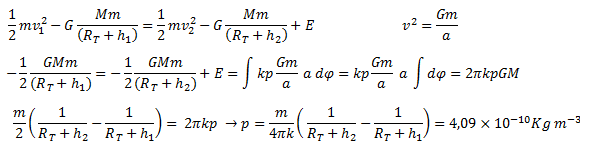
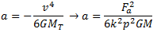

Ciccio9821 nov 2016, 23:55
Per il punto 3 ho considerato che la forza di attrito ha stesso verso e direzione del vettore velocità e per piccoli spostamenti è applicabile la definizione di L= Fxs cos a, dove a è uguale a 0 pertanto il coseno è sempre 1
-
Allegati
-

- Soluzione Satellite.png (6.54 KiB) Visto 7947 volte
Ciccio9827 nov 2016, 22:38
Scusa il ritardo ma ho avuto un fine settimana impegnato. La mia soluzione è questa, se è corretta scrivo il procedimento. Ho solo un dubbio: l'accelerazione penso che dovrebbe essere positiva poiché avvicinandosi alla Terra dovrebbe aumentare la sua velocità anche se nei calcoli compare un segno meno.
-
Allegati
-

- soluzione satellite punto 1-2.png (1.67 KiB) Visto 7876 volte
Ciccio9829 nov 2016, 17:23
Mi sembra troppo semplice, ma quindi a=(kpv^2)/m ) ???? In questo modo la spirale sarebbe il contributo della forza gravitazionale e della forza di attrito che si oppone al moto del satellite.
Ciccio9829 nov 2016, 20:22
Io l'avevo risolto semplicemente applicando il secondo principio della dinamica. Poiché in un moto uniforme circolare la velocità tangenziale è uguale a 0, devo solo considerare la forza di attrito: quindi Kpv^2=ma. Mi sembrava molto semplice in questo modo e conoscendo Flaffo ho fatto di tutto per risolverlo con qualche derivata :lol: :lol: :lol: . A volte le idee più semplici sono quelle giuste ;)
Flaffo30 nov 2016, 0:35
Ciccio98 ha scritto: Poiché in un moto uniforme circolare la velocità tangenziale è uguale a 0, devo solo considerare la forza di attrito: quindi Kpv^2=ma. Mi sembrava molto semplice in questo modo e conoscendo Flaffo ho fatto di tutto per risolverlo con qualche derivata :lol: :lol: :lol:
In un moto circolare la velocità tangenziale non è uguale a zero, ma comunque non ha importanza.. Perché quello del satellite non è un moto circolare, ma più una spirale. Inoltre la sola forza d'attrito non basta a giustificare l'accelerazione positiva del satellite. La forza di attrito è diretta in verso opposto al moto dunque porta ad accelerazione negativa.
Anche se non ho capito bene il procedimento alternativo di Guido (lo potresti rispiegare? :lol: ) il suo suggerimento di derivare l'energia totale, e porre questo uguale alla potenza sviluppata dalla forza di attrito è giusto. Ma per risolvere il problema ti manca una seconda equazione.. dove la trovi? :!:
Risultato interessante alla fine è che la componente tangenziale della forza peso risulta essere uguale a due volte quella di attrito.
guido30 nov 2016, 19:03
Flaffo ha scritto:Si, mi riferisco a quella tangente alla traiettoria. Abbiamo la forza di attrito negativa (verso opposto al moto) e la componente della forza gravitazionale ovviamente positiva (la traiettoria è una spirale..)
Cosa devo spiegare? Questa risposta, d'accordo con quanto avevo chiesto, me l'hai data tu il giorno 29 come cito sopra. Ed io ho postato la mia soluzione imponendo appunto che l'acc. tang. fosse determinata per la legge di Newton dalla forza di attrito negativa perchè opposta al moto come dici tu e dalla componente della forza gravitazionale lungo v ancora come dici tu. Dov'è il problema? Perchè ci vuole un'altra equazione? Anche il ragionamento sull'energia, che dici pure essere giusto, da lo stesso risultato ( ma non era quello che suggerivi a Ciccio? Gli dicevi: parti dall'energia e poi derivando delle cose ti ricavi l'accelerazione.....) :?: :?:
Questa volta proprio non ti capisco :roll: :roll: ma forse bisogna imporre che la componente della forza gravitazionale sia doppia della forza d'attrito. Perchè non lo vedo... :shock: :shock:
Ciccio983 dic 2016, 21:26
Il satellite aumenta la sua velocità perché avvicinandosi alla Terra aumenta secondo la legge che avevo scritto nel terzo punto. Dopo aver detto questo so che l'accelerazione deve essere necessariamente positiva. Adesso, la forza centripeta non può certamente cambiare il modulo della velocità ma solo la direzione, quindi l'unica altra forza deve essere necessariamente la forza di attrito e poi usare semplicemente il secondo principio della dinamica. Forse prima mi sono espresso male nel dire che l'accelerazione tangenziale era uguale a zero.
Pigkappa4 dic 2016, 14:32
Sorry non ho seguito la discussione e non so se posso aiutarvi :p
Pigkappa5 dic 2016, 19:43
(nota: Flaffo ha risposto mentre scrivevo per cui non ho risposto al suo messaggio qua)
Ho dato un'occhiata alla discussione e mi e' sembrato abbiate detto tutte (o quasi) cose condivisibili ma per qualche motivo alla fine vi hanno attanagliato i dubbi. Il problema e' famosissimo e la soluzione standard e' quella con l'energia. Si trova che il raggio dell'orbita diminuisce e la velocita' aumenta.
Sembra che guido voglia risolvere il problema senza fare l'approssimazione di orbita quasi circolare. Puo' essere un esercizio interessante; ho un presentimento che non si possa fare del tutto analiticamente ma se avete un minimo di esperienza con Mathematica o Matlab, potreste farlo numericamente (e se l'esperienza non ce l'avete, non e' impossibile arrivarci lo stesso).
guido ha scritto:Ricavando v si ha \(v= \frac{v_0}{1-v_0.k\rho.t}\). Ora uno potrebbe dire: allora per t tendente infinito v tende a zero. No! Il tempo deve essere limitato perchè v >0 e dunque \(t<\frac{1}{v_0k\rho}\). Ma che senso ha?
Per \(t \rightarrow \frac{1}{v_0k\rho}\), \(v \rightarrow + \infty\). Non e' una cosa particolarmente sorprendentemente secondo me e vuol dire che sicuramente succede qualcos'altro quando \(t \rightarrow \frac{1}{v_0k\rho}\).
Prima di poter usare soluzioni che assumono l'orbita sia quasi circolare, bisogna chiedersi se lo si puo' fare. In questo caso direi che la cosa ha senso se l'accelerazione tangenziale dovuta all'attrito modifica poco l'orbita. Ad esempio potete controllare se il raggio dell'orbita cambia di poco in un giro intorno alla Terra, e potete imporre che l'accelerazione tangenziale sia molto minore della forza di gravita'. Scommetterei che una di queste condizioni smette di essere vera quando \(t \rightarrow \frac{1}{v_0k\rho}\), nel qual caso bisogna risolvere il problema senza questa approssimazione.
Per completezza: il problema completo non e' particolarmente difficile. L'equazione del moto ha componenti radiale e tangenziale (assumendo io abbia copiato l'accelerazione bene da qua):
\(\displaystyle \frac{d^2 r}{d t^2} - r (\frac{d \phi}{dt})^2= -\frac{GM_{Terra}}{r^2} - k \rho \sqrt{(\frac{dr}{dt})^2 + (r \frac{d \phi}{dt})^2} \frac{dr}{dt}\)
\(\displaystyle r \frac{d^2 \phi}{d t^2} + 2 \frac{dr}{dt} \frac{d \phi}{dt} = - k \rho \sqrt{(\frac{dr}{dt})^2 + (r \frac{d \phi}{dt})^2} r \frac{d \phi}{dt}\)
Si risolvono numericamente senza problemi. Dubito si risolvano analiticamente perche' gia' senza attrito sono complicate (sappiamo che in teoria l'orbita puo' essere qualsiasi conica in funzione delle condizioni iniziali).
Pigkappa7 dic 2016, 19:28
Ho corretto le formule sopra, i termini a destra sono brutti perche' l'attrito proporzionale a \(v^2\) e' antipatico da scrivere in coordinate cilindriche (ma anche cartesiane), comunque sono sicuro che il computer risolve quelle equazioni facilmente.